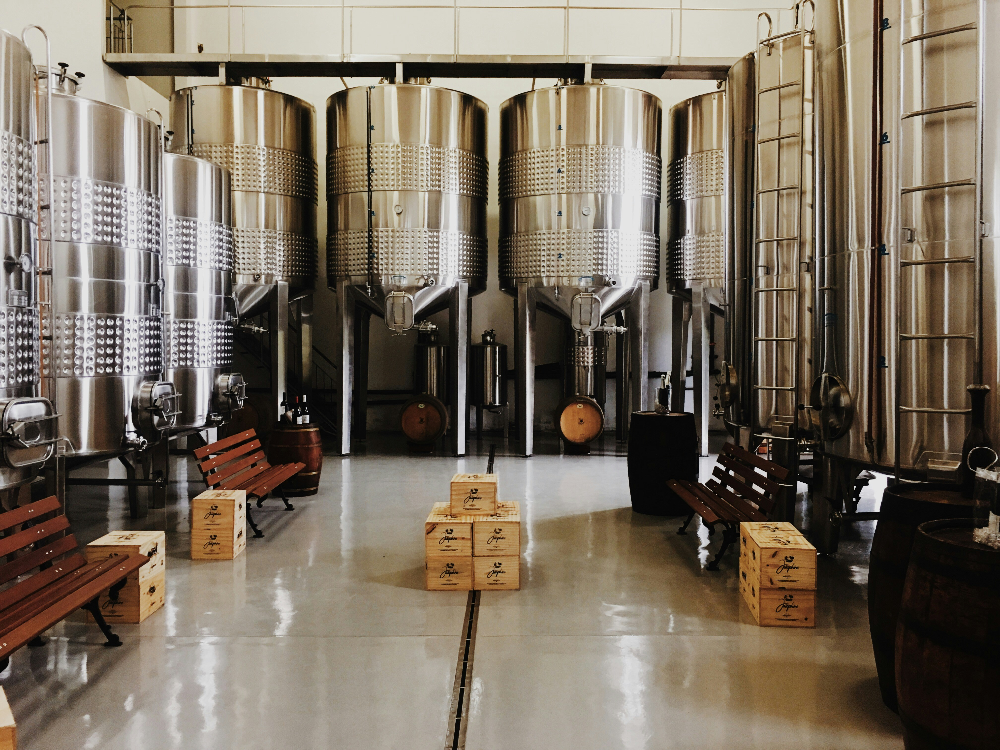

Les Fondateurs
Deux hommes, une vision partagée

LE MAÎTRE BRASSEUR
Co-fondateur · Salerne, Italie
Issu d’une famille de Salerne profondément attachée aux saveurs et aux traditions italiennes, il grandit dans un univers où la fermentation et le partage occupent une place centrale. Après un master en hôtellerie à Milan, il choisit de se spécialiser dans l’art brassicole afin d’honorer ses racines. Au fil de ses voyages en Europe et de ses découvertes des cultures brassicoles, il rencontre notre directeur créatif et ensemble décident de fusionner leur passion.

LE DIRECTEUR CRÉATIF
Co-fondateur · Belgique
Bercé par la culture belge où la bière fait partie des traditions et des moments de convivialité, le directeur créatif a grandi avec une réelle passion pour cet univers. Diplômé d’un master en marketing, il apporte à Ambra une vision moderne mêlant identité de marque, créativité et authenticité. Inspirés par le savoir-faire belge et l’élégance italienne, à deux, ils imaginent une marque capable de réunir deux cultures autour d’une même passion : la bière.